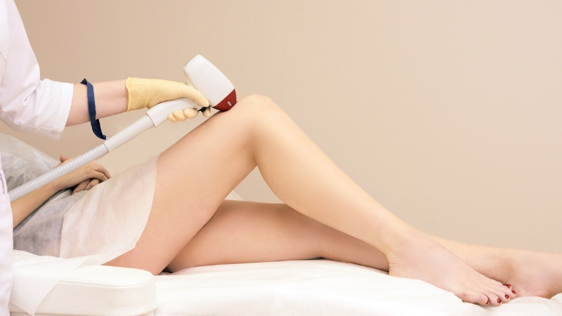
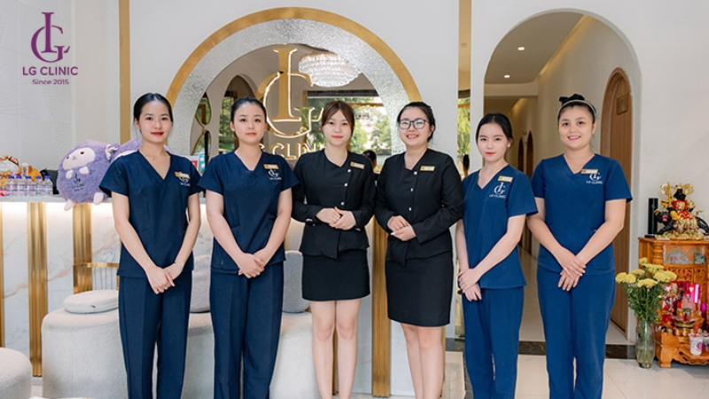
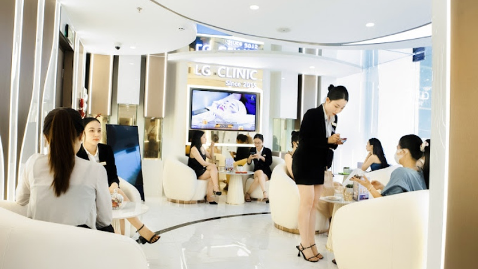

Điều gì tạo nên một kỹ thuật viên spa giỏi? Góc nhìn từ LG Spa Training Center
Vì sao nghề spa được nhiều người chọn theo học?
Nghề spa đang ngày càng trở thành một lựa chọn hấp dẫn đối với nhiều người, đặc biệt là giới trẻ, bởi những ưu điểm nổi bật sau:
- Không đòi hỏi trình độ học vấn cao: Yếu tố quan trọng nhất của nghề spa là kỹ năng và tay nghề. Thay vì tập trung vào lý thuyết hàn lâm, nghề này chú trọng vào thực hành, giúp bạn nhanh chóng thành thạo các kỹ năng cần thiết.
- Cơ hội việc làm rộng mở: Nhu cầu làm đẹp ngày càng tăng cao, kéo theo sự bùng nổ của các spa và thẩm mỹ viện. Điều này tạo ra một thị trường lao động sôi động, với rất nhiều cơ hội việc làm cho các kỹ thuật viên có tay nghề. Ngoài ra, sau khi có kinh nghiệm, bạn hoàn toàn có thể tự mở spa kinh doanh riêng.
- Chi phí học hợp lý: Vấn đề học nghề spa bao nhiêu tiền thường là mối quan tâm của nhiều người. Tuy nhiên, so với các ngành nghề khác, chi phí học nghề spa khá hợp lý, và bạn có thể nhanh chóng thu hồi vốn đầu tư nhờ vào mức lương hấp dẫn sau khi tốt nghiệp.
- Mức thu nhập hấp dẫn: Thu nhập của một kỹ thuật viên spa không chỉ đến từ lương cứng mà còn bao gồm hoa hồng dịch vụ, tiền tip và phụ cấp. Với tay nghề giỏi và kinh nghiệm, bạn có thể đạt được mức thu nhập ổn định và khá cao, thậm chí lên đến hàng chục triệu đồng mỗi tháng.
Những yếu tố tạo nên một kỹ thuật viên spa giỏi
Chuyên môn kỹ thuật vững vàng
Một kỹ thuật viên giỏi phải có kiến thức sâu rộng về cấu trúc da, các loại mỹ phẩm, và các phương pháp trị liệu từ cơ bản đến nâng cao. Họ phải thành thạo các thao tác massage, biết cách sử dụng các thiết bị công nghệ cao và tuân thủ quy trình chuẩn quốc tế.
Tại LG Spa Training Center, chúng tôi chú trọng đào tạo thực hành để học viên có thể tự tin áp dụng kiến thức vào thực tế, đảm bảo tay nghề vững chắc ngay khi tốt nghiệp. Đây là yếu tố cốt lõi, quyết định chất lượng dịch vụ và sự an toàn của khách hàng.
Tác phong chuyên nghiệp
Tác phong của một kỹ thuật viên spa không chỉ thể hiện qua trang phục, mà còn ở thái độ làm việc. Việc luôn giữ thái độ thân thiện, chuyên nghiệp và ân cần với khách hàng là một yếu tố quan trọng giúp xây dựng sự tin tưởng và uy tín. Một kỹ thuật viên giỏi luôn biết cách ứng xử khéo léo và giữ mối quan hệ tốt đẹp với khách hàng, đồng nghiệp và cấp trên.
Sự cầu tiến và ham học hỏi
Ngành spa luôn phát triển với những xu hướng và công nghệ mới. Do đó, một kỹ thuật viên spa giỏi cần phải luôn cập nhật kiến thức mới, tham gia các khóa học nâng cao và không ngừng học hỏi để hoàn thiện kỹ năng của mình. Đây chính là yếu tố giúp một kỹ thuật viên duy trì sự chuyên nghiệp và phát triển nghề nghiệp bền vững.
Khả năng giao tiếp và tư vấn
Một kỹ thuật viên spa giỏi không chỉ là người thực hiện các kỹ thuật chăm sóc mà còn là người biết lắng nghe và tư vấn cho khách hàng. Việc hiểu rõ nhu cầu của khách hàng và tư vấn dịch vụ phù hợp sẽ giúp tạo dựng mối quan hệ lâu dài, đồng thời nâng cao trải nghiệm dịch vụ của khách hàng.
Đam mê thực sự với nghề
Cuối cùng, điều tạo nên sự khác biệt lớn nhất chính là đam mê thực sự với việc mang lại vẻ đẹp và sự thư giãn cho khách hàng. Khi có đam mê, mọi thử thách đều trở thành cơ hội để học hỏi và phát triển.
Những kỹ thuật viên có đam mê sẽ:
- Luôn tìm cách cải thiện kỹ thuật và dịch vụ.
- Cảm thấy hạnh phúc khi nhìn thấy sự hài lòng của khách hàng.
- Không ngại đầu tư thời gian và công sức để hoàn thiện bản thân.
Tại LG Spa Training Center, chúng tôi không chỉ truyền đạt kiến thức chuyên môn mà còn giúp học viên phát triển toàn diện những yếu tố trên. Bởi chúng tôi tin rằng, một kỹ thuật viên spa thực sự giỏi là người có thể mang lại giá trị thực sự cho khách hàng, cho spa và cho chính bản thân mình.
Liên hệ LG Spa Training Center để được tư vấn khóa học spa phù hợp!